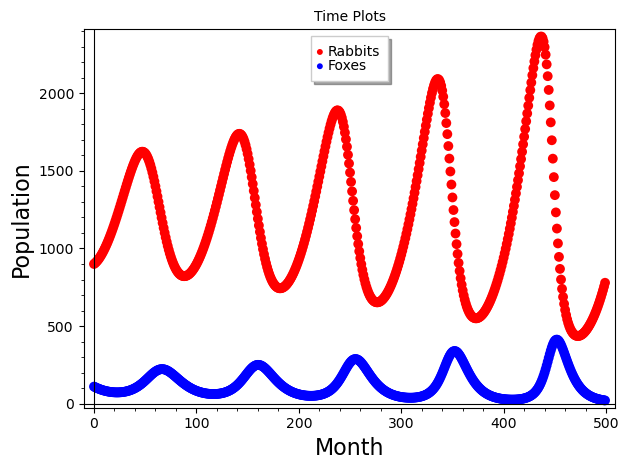
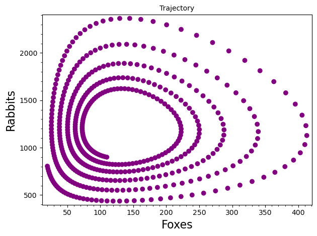
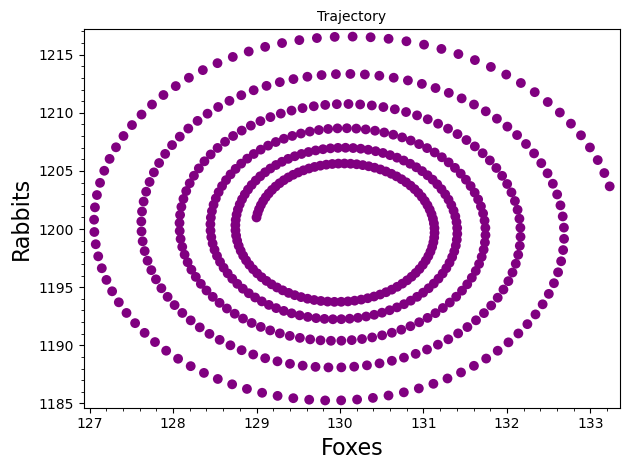
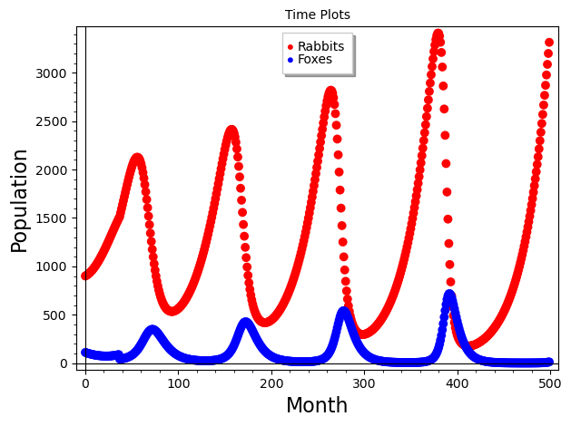
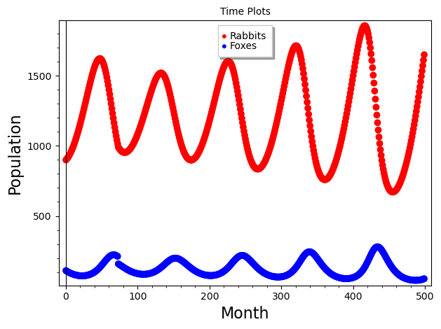

Section 8.5 A Nonlinear Predator-Prey Model
Let's consider a similar population of foxes and rabbits along with the same set of assumptions as in Section 8.4, but we will model the assumptions differently. We will start with modeling assumptions 2 and 3 the same way:
where \(0\lt a\le 1\) and \(0\lt d\le 1\text{.}\) In Section 8.4, the coefficients of \(F_n\) and \(R_n\) were kept constant. In this section we model them as increasing or decreasing in the presence of the other population, as we did in modeling the growth of bacteria. Assumption 4 says that the presence of rabbits increases the rate of growth of foxes, so we have
where \(b\ge 0\text{.}\) Likewise, assumption 5 says that the presence of foxes decreases the rate of growth of rabbits, so we have
where \(c\ge 0\text{.}\) Rewriting (8.5.3) and (8.5.4) we get our model
This type of model is called a Lotka-Volterra model, named after the researchers who devised it in the 1920s and 1930s.
Note that both equations have a term involving \(R_nF_n\text{;}\) thus the model is nonlinear. This term can be interpreted as modeling the number of interactions of the two species. The interactions increase the number of foxes while decreasing the number of rabbits. Also note the similarities between this nonlinear model and the linear model in (8.4.5). We will refer to the parameters in this model using the same names as in the linear model.
Let's implement this model in SageMath, modeling 500 months. (Note that the parameters in this model do have similar meanings as in the linear model, but they do have different values. Also we have different initial populations.)


This model predicts that the populations oscillate with the same period of oscillation, but with a phase shift, meaning that they do not reach their peaks at the same time. These oscillations cause the spiraling nature of the trajectories in the graph of rabbits versus foxes. Oscillations such as this are actually observed in nature; thus this model appears to be more reasonable than the linear model.
Now let's calculate the equilibrium of the system. Suppose \((f,r)\) is an equilibrium. By definition, this must satisfy the system of equations
Assuming that \(f\ne 0\) and \(r\ne 0\text{,}\) we get the solution \(f = 130\) and \(r = 1200\text{.}\) Another equilibrium is \((0,0)\text{.}\) Note that the point \((130,1200)\) is at the center of the spiral in the phase plane. If we change the starting populations in the code to 130 foxes and 1200 rabbits, we note that the populations do not change, as expected.
To determine whether this equilibrium is stable or unstable, we need to consider starting populations near the equilibrium. Changing the starting population to 129 foxes and 1201 rabbits yields the trajectory shown in Figure 8.5.2.

Notice that the trajectory moves away from the equilibrium. Trying other initial populations yields similar results. The fact that the trajectories move away from the equilibrium is evidence that the equilibrium is repelling.
Example 8.5.3. Hunting.
Suppose that a local hunting club wants to have a fox hunt at one of their next two meetings. The first meeting is 36 months from now and the next is 36 months after that. If they limit themselves to killing 50 foxes, how would the two options affect the long–term populations of the foxes and rabbits?
Starting with 110 foxes and 900 rabbits, the model predicts that at month 36, there will be approximately 88 foxes. Killing 50 foxes would reduce this number to 38. In the SageMath cell, changing the equation in month 36 to reflect the hunting of 50 foxes results in the code and graph shown below.

Notice that this causes a dramatic change in the behavior of the system. The populations fluctuate much more than they did in Figure 8.5.1. So, hunting 50 foxes in month 36 would have a great effect on the long–term populations.
Now change the code above so that the hunt occurs in month 72. In month 72, the model predicts a population of 212. Killing 50 foxes would leave 162. Changing the number of foxes in month 72 to 162 results in the graph in Figure 8.5.5. Notice that the fox population drops in month 72 which causes the rabbit population to initially grow. However, in the long–term the populations behave much as they did in Figure 8.5.1.

Why is there such a dramatic difference between these two cases? Note that originally near month 36, the fox population was near a local minimum. At month 72, it was near a local maximum. Killing 50 foxes near a time of a local minimum has a much greater effect than near a local maximum.
Thus the hunting club should not schedule the hunt at month 36; this would cause too great an effect on the populations. The hunt at month 72 would not cause a long–term effect.
Exercises Exercises
1.
Consider the parameter fox death factor.
(a)
Investigate the sensitivity of the system to the value of this parameter (use initial populations of 110 foxes and 900 rabbits). Specifically, comment on how the amplitudes of the oscillations change as this parameter changes.
(b)
Can this death factor ever be greater than or equal to 1? Why or why not? (Hint: See Equations (8.5.1) and (8.5.5).)
(c)
This parameter could be interpreted as the proportion of foxes that survive from one month to the next in the absence of rabbits. Suppose that a disease infects the fox population, decreasing the proportion that survives each month. What effect might this have on the populations?
2.
Suppose hunters are allowed to kill \(m\) rabbits at the end of each month.
(a)
Modify the model to take this into account (use the parameters and initial populations shown in the original model).
(b)
What effect will this have in the long–term? Would you say the system is sensitive to the parameter \(m\text{?}\)
(c)
How many rabbits could the hunters kill each month and still have the populations survive in the long–term?
3.
Consider a forest that contains Foxes and Wolves which compete for the same food resources. If \(F_n\) and \(W_n\) represent the populations of foxes and wolves, respectively, at the end of month \(n\text{,}\) a model for their populations is
(a)
Consider the parameters 1.2 and 1.3. Explain why both of them are greater than 1.
(b)
Why are the parameters -0.001 and -0.002 both negative?
(c)
Find the equilibria for this system and graphically determine if they are attracting or repelling (consider only values up to \(n = 25\)).
(d)
Is this model sensitive to the initial populations? Why or why not?